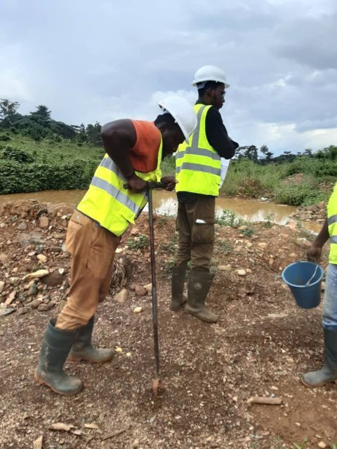
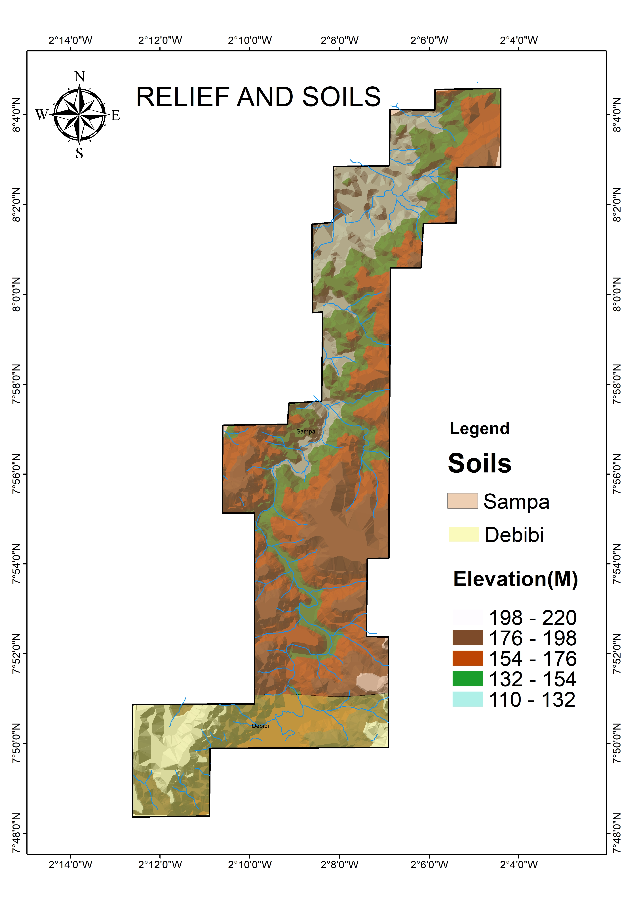

My Projects

GeoAI Segmentation
Geospatial AI-based segmentation and mapping of terrain.

Soil Surveying
Soil property mapping for agriculture and planning.

3D Map
Three-dimensional mapping and terrain visualization.

DEM Analysis
Digital Elevation Model for spatial analysis.

KIBI Gold Mine Project
Geospatial analysis of mining site.
.jpg)
Land Use Map
Land use classification for mine site area.

Mine Location Map
Geographic location mapping of mining operations.

Mine Site Overview
Comprehensive view of mine site layout.
Satellite Image
Remote sensing satellite imagery analysis.

Soil Classification
Soil type classification and mapping.

Soil Sampling
Field soil sampling methodologies and results.

Sampling Map
Spatial distribution of sampling locations.

Report Writing
Documentation and professional reporting.

Template Design
Custom template design for presentations.
GIS Spatial Analysis Workflow
Demonstration of GIS spatial analysis workflow and techniques.
Mapping Data Visualization
Mapping and data visualization using R and GIS.
Interactive Mapping and Modeling
Advanced spatial data workflow and modeling demonstration.
Spatial Data Visualization and Reporting
Spatial data visualization and professional reporting.
Advanced Geospatial Analytics
Final demonstration of advanced geospatial analytics.
Google Earth Engine Analysis
Cloud-based geospatial analysis using Google Earth Engine.